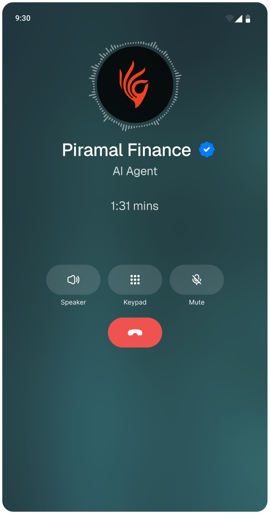

Thousands of follow-up calls.
Limited RM bandwidth.
Sound familiar?
Piramal Finance used DoubleTick AI Voice to automate customer follow-ups across the loan lifecycle and escalated complex conversations to the right RM.

5,704+
calls attempted
1,343
completed conversations
51.6%
document follow-up
connect rate
connect rate
Apply for a Free Pilot